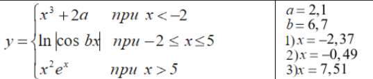
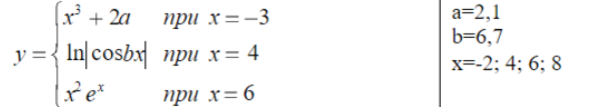

Задание 1
Дано целое число A. Проверить истинность высказывания: «Число A является положительным и двузначным»
Ответ:
Задание 2
Дано целое число. Если оно является положительным и четным, то прибавить к нему 1; в противном случае не изменять его. Вывести полученное число.
Ответ:
Задание 3
Вычислить значение функции y=f(x) при произвольных значениях x.

Ответ:
Задание 4
Вычислить значение функции y=f(x) при произвольных значениях x.

Ответ: